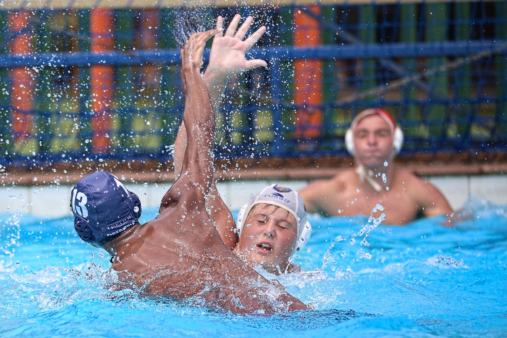

The 2026 NCAA Women's Water Polo Championship: Lessons for the Next Generation
When USC and California faced off in the 2026 NCAA Women's Water Polo Championship, millions of fans watched two powerhouse programs battle for collegiate supremacy. For young athletes here in Wesley Chapel, Land O' Lakes, and the greater Tampa Bay area, this kind of elite competition is more than just exciting to watch — it is a window into what dedication, teamwork, and long-term commitment to the sport can produce.
Why Championship Moments Matter for Youth Players
It is easy to look at a championship game and see only the result — a final score, a winning team, a trophy being lifted. But the more important story is everything that came before that moment. The players competing at the NCAA level did not arrive there by accident. They spent years developing their skills in youth programs, learning the fundamentals of water polo, growing through adversity, and building the mental toughness required to compete at the highest level.
For young athletes in our community, watching programs like USC and California compete is a powerful reminder that every lap swum, every drill practiced, and every team meeting attended is a building block toward something greater. The road to college water polo begins long before a player ever sets foot on a college campus.
What Elite Collegiate Water Polo Can Teach Youth Players
Whether your child is just discovering water polo or has been playing for several years, there are meaningful takeaways from watching championship-level competition.
- Tactical awareness matters: At the NCAA level, teams execute complex offensive and defensive systems with precision. Youth players benefit from learning basic positioning and game strategy early, so that advanced tactics feel natural as they grow.
- Physical conditioning is non-negotiable: Collegiate water polo players are elite athletes who combine swimming fitness with strength, agility, and endurance. Building a strong aerobic base through consistent swim training is one of the most important investments a young player can make.
- Communication wins games: Championship teams communicate constantly in the water. Encouraging young players to talk to their teammates, call for the ball, and organize their defense builds habits that translate directly to higher levels of play.
- Resilience defines careers: No championship team wins every game or every moment. Young athletes who learn how to respond to mistakes, bounce back from losses, and stay composed under pressure are developing skills that will serve them both in and out of the pool.
The Local Pathway to Collegiate Water Polo
Parents in Wesley Chapel and Land O' Lakes often ask how their child can build a realistic path toward collegiate water polo. The answer begins with quality foundational training in a supportive team environment. Young athletes need coaches who understand both the sport and the developmental stage of their players — coaches who challenge them appropriately while keeping the experience rewarding.
At Nexar Aquatic Academy, water polo players receive structured training that emphasizes both the technical skills and the competitive mindset necessary for long-term success. Whether a young athlete is brand new to the sport or already dreaming of playing in college, the right environment makes all the difference in shaping their trajectory.
Inspired by the Best, Built From the Ground Up
Championships like the one USC and California contested in 2026 exist to remind all of us why we love this sport. They celebrate what is possible when talented young athletes are given the tools, the coaching, and the time to develop fully. For the young players training across Tampa Bay today, that same story is still being written — one practice, one game, and one season at a time.
If your family is interested in learning more about youth water polo opportunities in the Wesley Chapel and Land O' Lakes area, Nexar Aquatic Academy welcomes athletes of all experience levels. The next chapter of your athlete's story starts in the water.
Ready to get in the water?
First practice is completely FREE — no commitment needed.